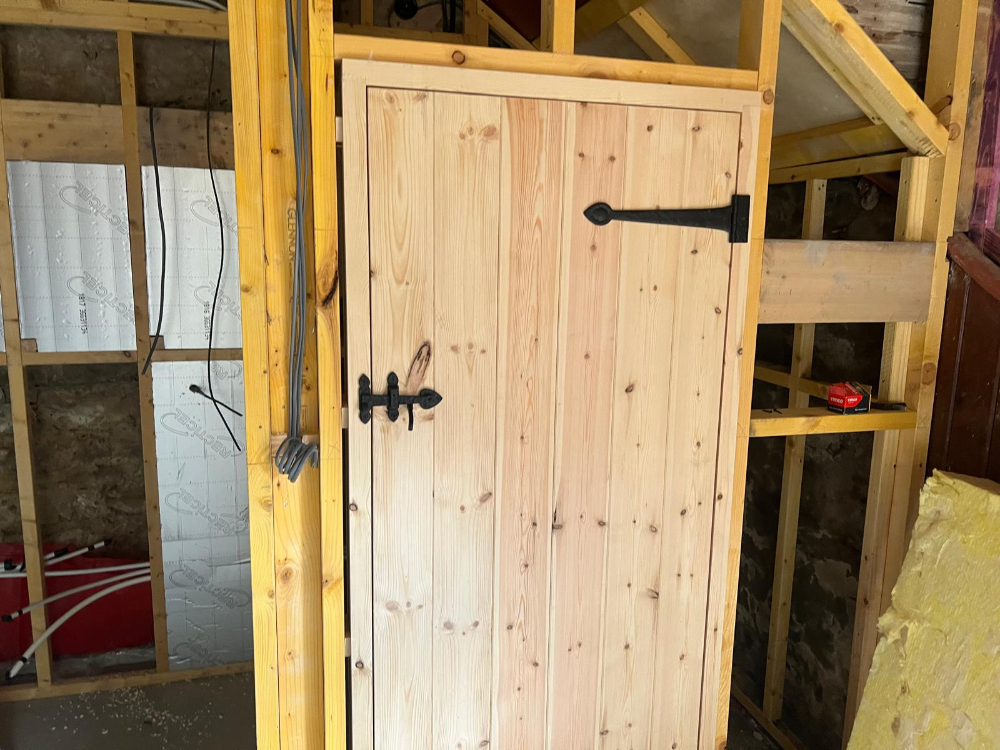
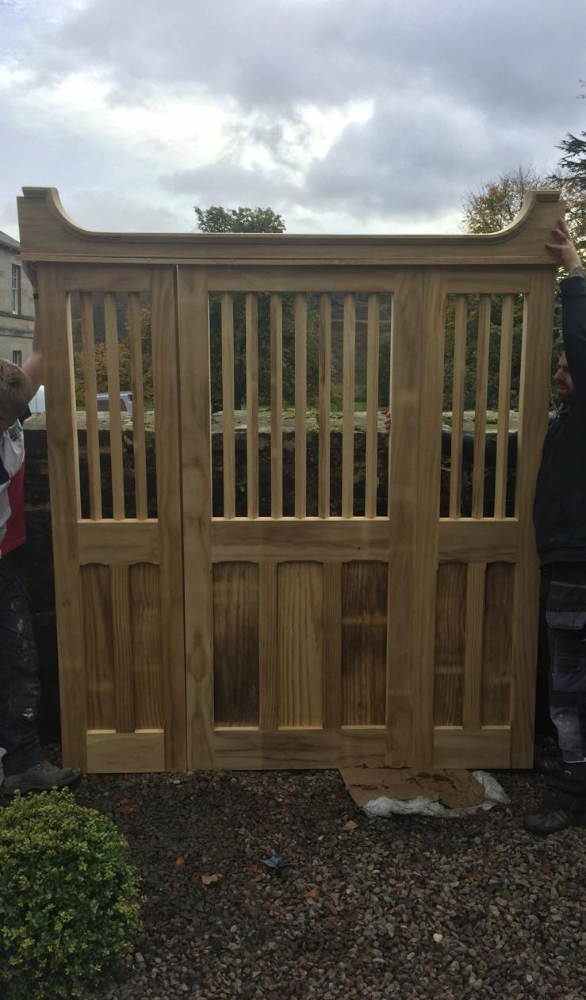

What We Create
Handcrafted in our workshop, installed by our own team in Ponteland homes

Staircases
Oak, pine, and hardwood staircases built to any design — traditional, contemporary, or a bespoke blend. Essential for loft conversions and new extensions.

Fitted Wardrobes
Custom fitted wardrobe systems that use every inch of awkward alcoves, sloping ceilings, and irregular walls — perfect for Ponteland bedrooms.

Timber Doors
Hardwood internal and external doors, made to match your home's style — whether you're replacing a period ledge-and-brace or creating something entirely new.

Gates & Fencing
Durable hardwood and softwood gates and fencing panels for Ponteland properties — designed to complement your property's kerb appeal.